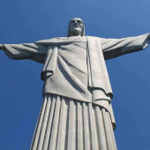
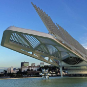
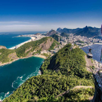
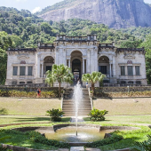

Os melhores pontos turísticos para visitar no Rio de Janeiro
O Rio de Janeiro é o maior destino turístico internacional no Brasil, da América Latina e de todo o Hemisfério Sul, a capital fluminense é a cidade brasileira mais conhecida no exterior.
É um dos principais centros econômicos, culturais e financeiros do país, sendo internacionalmente conhecida por diversos ícones culturais e paisagísticos, como o Pão de Açúcar, o morro do Corcovado com a estátua do Cristo Redentor, as praias dos bairros de Copacabana, Ipanema e Barra da Tijuca, entre outras; os estádios do Maracanã e Nilton Santos; o bairro boêmio da Lapa e seus arcos; o Theatro Municipal do Rio de Janeiro; as florestas da Tijuca e da Pedra Branca; a Quinta da Boa Vista; a Biblioteca Nacional; a ilha de Paquetá; o réveillon de Copacabana; o carnaval carioca; a Bossa Nova e o samba.
- 
- 
- 


- 